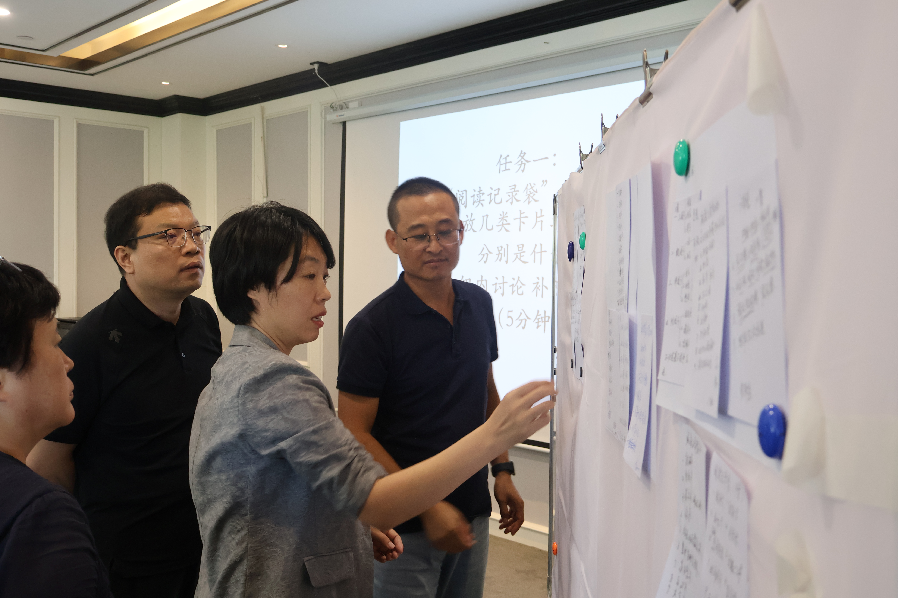
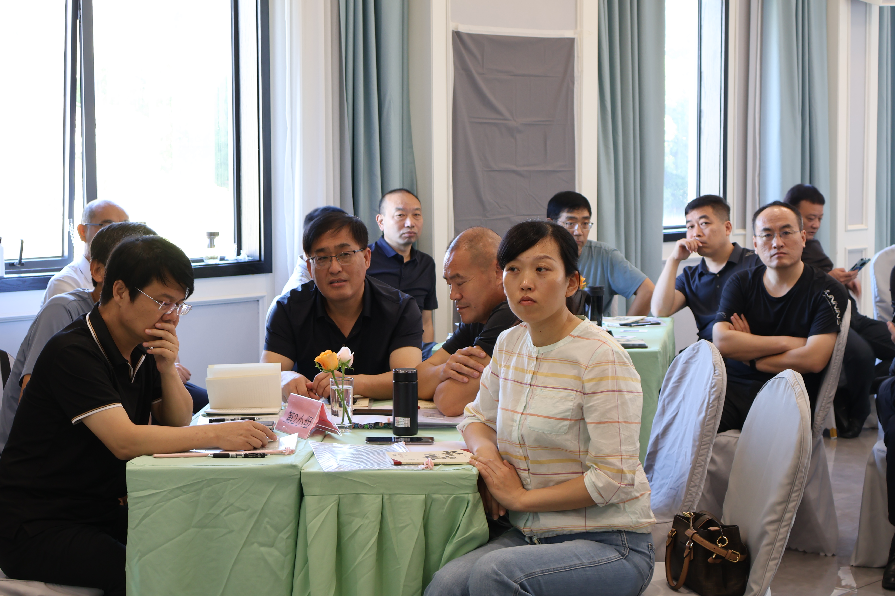

管理干部同读
组织学校管理干部同读中央教育政策文件，校准办学发展方向
同读活动
干部专属共读活动，交流管理经验，提升综合能力
校园管理专题共读会
聚焦校园治理、团队管理、教育政策，干部集中共读研讨，梳理工作新思路。
活动时间：每月第二周周五

干部读书心得交流会
全员分享读书感悟，结合岗位工作复盘总结，推动读书成果落地。
活动时间：每季度末集中开展

管理书籍研学沙龙
精选教育管理经典书籍，分组深度研学，碰撞管理创新思路。
活动时间：寒暑假专项开展
管理干部推荐书单
书单目录
《县中的孩子》
林小英
《学校见闻录：学习共同体的实践》
佐藤学
《新课程关键词》
崔允漷
《中小学校管理评价》
袁贵仁
《当校长遇见德鲁克——用目标管理引领学校发展》
杜绍基 彭信之
《当校长遇见德鲁克——冰山下的领导力》
杜绍基 彭信之
《世界咖啡 创造集体智慧的汇谈方法》
汤素素
《变革的方法》
沈祖芸
《学校转型 北京十一学校创新育人模式的探索》
李希贵
《学校变革，我们一起来！》
R.布鲁斯·威廉姆斯
《设计思维 玩转创业》
杜绍基
点击左侧书目，查看书籍简介与书评